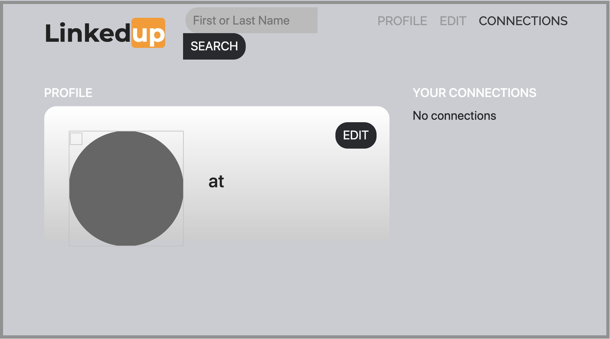
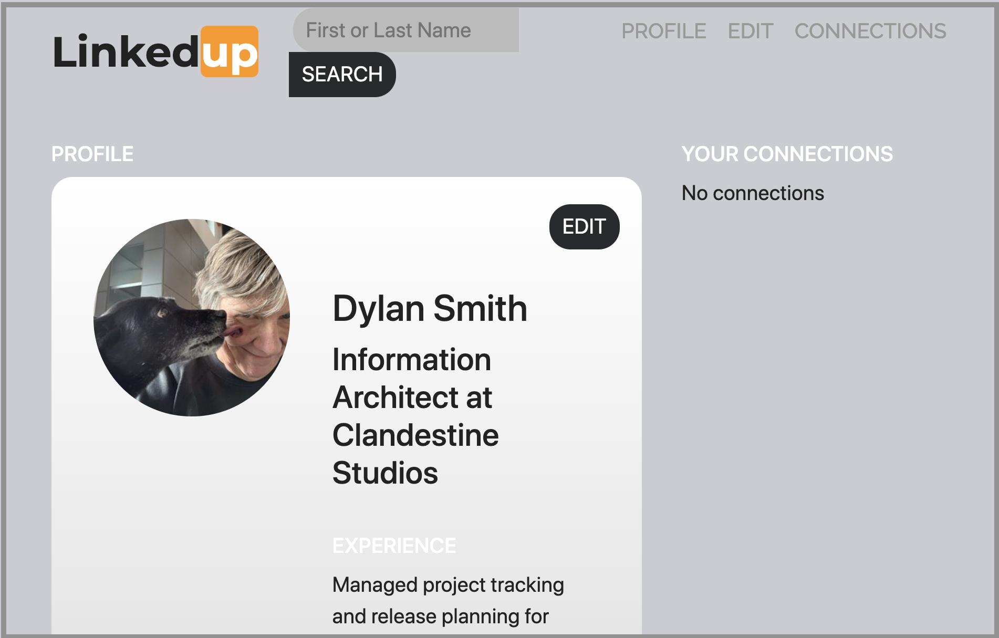
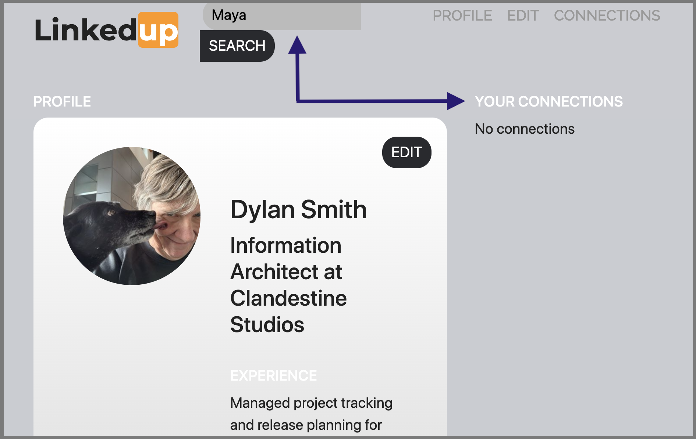
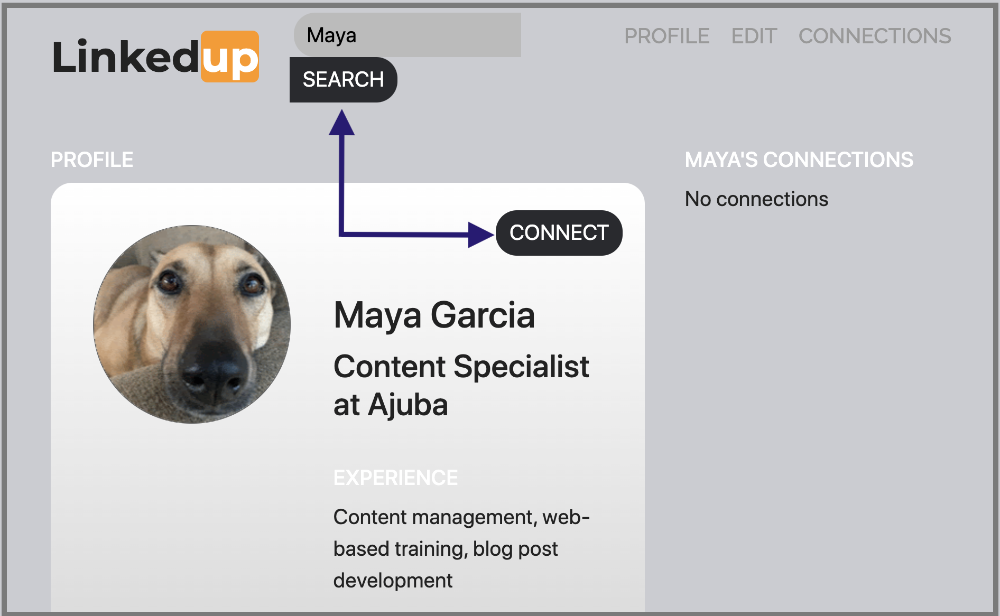

调用其它canister
ICP一个重要的特性是能够在不同Canister间构建，部署并调用共享函数。
调用不同Canister的能力-有时被称为canister间调用-允许你在多个应用中复用并共享功能。
例如，你想要创建一个应用来实现专有网络，组织社区活动或举办筹资活动。
每个应用可能都需要社交组建，能够让用户基于一些标准或共同的兴趣识别社交关系，比如作为朋友和家人或当前和之前的同事。
为了实现这个社交组件，你可能想要创建一个单独的canister来存储用户关系，然后编写你的专用网络，社区组织，或筹资应用来导入并调用定义在这个canister的社交相关的函数。你之后可以构建其他应用来使用这个社交canister或拓展社交canister的功能来使这个组件对其它开发者更加实用。
基于Motoko的LinkedUp示例程序提供一个简单的专用网络实现，可以演示如何在项目中调用其它canister。
LinkedUp示例程序使用以下Canister实现：
-
linkedup canister创建并存储基本的用户信息，包含工作经历和教育背景
-
connectd canister创建并存储用户的关系网
-
linkedup_assets canister存储前端资源-包含JavaScript，HTML和CSS文件-定义了用户页面
下载Demo
使用LinkedUp示例程序来测试调用其它caniste步骤
-
打开终端切换到ICP示例项目目录
-
克隆linkedup仓库
git clone https://github.com/dfinity/linkedup.git -
切换到linkedup仓库的本地工作目录
cd linkedup -
运行下面的命令安装node模块
npm install如有必要，运行下面的命令修复漏洞
npm audit fix -
编辑器中打开dfx.json文件并验证dfx配置里的版本和你安装的dfx版本一致。
注册canister识别码
连接到本地ICP 网络后，你可以为你的项目在这个网络注册生成canister识别码。
在本地网络注册canister识别码步骤
-
检查你当前是否在项目目录
-
运行下面的命令注册canister识别码
dfx canister create --all这个命令会为dfx.json配置文件中配置的canister输出网络绑定的canister识别码。
"connectd" canister created with canister id: "75hes-oqbaa-aaaaa-aaaaa-aaaaa-aaaaa-aaaaa-q" "linkedup" canister created with canister id: "cxeji-wacaa-aaaaa-aaaaa-aaaaa-aaaaa-aaaaa-q" "linkedup_assets" canister created with canister id: "7kncf-oidaa-aaaaa-aaaaa-aaaaa-aaaaa-aaaaa-q"
记住由于你在本地运行ICP网络，这些识别码只在本地网络有效。为了在远程网络部署canister，你必须使用—network命令选项和一个特定的网络名称或地址来在相应网络注册识别码。
构建并部署demo项目
部署构建linkup示例应用步骤如下：
-
运行pwd命令检查你仍然在项目目录
-
运行下面的命令构建linkedup canister
dfx build -
运行下面的命令在本地网络部署项目
dfx canister install --all您将会看到类似下面的 connectd, linkedup 和 linkedup_assets 三个canisters 的标识符信息：
Installing code for canister connectd, with canister_id 75hes-oqbaa-aaaaa-aaaaa-aaaaa-aaaaa-aaaaa-q Installing code for canister linkedup, with canister_id cxeji-wacaa-aaaaa-aaaaa-aaaaa-aaaaa-aaaaa-q Installing code for canister linkedup_assets, with canister_id 7kncf-oidaa-aaaaa-aaaaa-aaaaa-aaaaa-aaaaa-q
-
复制由dfx canister install命令返回的linkedup_assets canister识别码
在该示例 dapp 中，只有linkedup_assets canister智能合约包含用于访问 dapp 用户界面的前端资源。 因此，要在浏览器中打开 dapp，您需要指定
linkedup_assetscanister标识符。 -
浏览器中打开linkedup_assets canister
例如：
http://127.0.0.1:8000/?canisterId=7kncf-oidaa-aaaaa-aaaaa-aaaaa-aaaaa-aaaaa-q
创建资料并连接
运行linkedup 示例应用步骤：
-
启动浏览器
-
输入web服务器主机名称，端口和canisterId关键字，然后粘贴linkedup_assets canister识别码做为URL展示
127.0.0.1:8000/?canisterId=<ic-identifier-for-linkedup-assets>
浏览器显示介绍页面。
将自动生成公私钥对来建立您访问Canister的身份，因此在使用该服务之前无需提供用户名和密码或注册帐户来存储您的身份。
-
单击 Login。
浏览器显示一个空的个人资料页面。

-
单击 Edit, 输入资料信息, 复制并粘贴头像照片的图片地址, 然后单击Submit。

单击提交后，您将拥有一个包含一些工作历史记录的个人资料。
例如：

添加另一个资料
此时，没有其他资料可以搜索或添加为连接。 要尝试搜索和连接功能，您可以：
-
运行一个脚本，用一些额外的资料填充示例应用程序。
-
打开无痕窗口手工创建另一个资料
对于本教程，您将手动创建另一个资料。
要添加具有不同身份的用户资料：
-
在浏览器窗口的右上角，单击相应的图标以显示浏览器的菜单选项。
例如，如果您使用的是 Google Chrome，则单击垂直椭圆以显示“更多”菜单。
-
如果您使用的是 Google Chrome，请单击“打开新的无痕窗口”。
-
将第一个浏览器的 URL 复制并粘贴到无痕浏览窗口中，然后单击 Login。

请注意，隐私浏览窗口中没有配置文件，但您的原始配置文件在初始浏览器选项卡中仍可见。
-
点击 Edit, 输入资料信息, 复制并粘贴头像照片的图片地址，并点击 Submit。

单击提交后，您将获得第二个个人资料，其中包含一些可以查看的工作历史。
例如：

-
键入您创建的第一个资料中的名字或姓氏（例如，如果您为 Maya Garcia 创建了资料，请键入 Maya），然后单击 Search.

将显示与您的搜索条件匹配的资料。

-
从搜索结果中选择联系人，等待显示连接按钮，然后单击 Connect.

当连接请求完成时，第二个资料显示与第一个资料的连接。 例如：
-
切回到第一个资料的浏览器。
如果您想在第一个资料和您在无痕浏览窗口中创建的资料之间创建连接，您可以通过重复搜索、选择和连接步骤来实现。
探索配置文件
现在，你体验了示例程序的基本特性，接下来了解一下配置和源码文件如何被使用
探索配置文件步骤
-
切换到linkedup目录，然后打开项目的dfx.json文件
-
注意有2个主canister被定义-connectd和linkedup-每个都有main.mo源码文件
-
注意linkedup_assets canister指定了一个main.js的前端入口和CSS以及HTML文件资源
-
注意应用使用默认的服务器IP和接口
探索connected的源代码
社交链接canister connectd由下面的文件构成：
-
digraph.mo文件提供创建一个有向的点线图来描述用户的连接关系
-
main.mo包含actor和定义用户连接关系的关键函数，可以被linkedUp示例应用调用
-
types.mo文件定义自定义类型，可以映射一个点到一个用户信息，这在digraph和main程序文件中有使用
探索Linkedup源代码
工作经历和教育背景的用户信息源码文件由下面文件构成:
-
main.mo文件包含actor和LinkedUp示例程序的关键函数
-
types.mo文件定义自定义类型，描述用户身份和信息，在linkedup canister的main程序中被导入使用
-
utils.mo文件提供帮助函数
查询和更新操作
在使用 LinkedUp 示例应用程序时，您可能会注意到某些操作（例如查看资料或执行搜索）几乎立即返回结果。 其他操作（例如创建资料或添加连接）需要更长的时间。
这些性能差异说明了在 linkedup canister 中使用查询和更新调用之间的差异。
例如, 在 src/linkedup/main.mo 文件中, create 和 update 函数是改变canister状态的更新调用, 但为查看和搜索资料的函数 get 和 search 函数是查询调用:
// Profiles
public shared(msg) func create(profile: NewProfile): async () {
directory.createOne(msg.caller, profile);
};
public shared(msg) func update(profile: Profile): async () {
if(Utils.hasAccess(msg.caller, profile)) {
directory.updateOne(profile.id, profile);
};
};
public query func get(userId: UserId): async Profile {
Utils.getProfile(directory, userId)
};
public query func search(term: Text): async [Profile] {
directory.findBy(term)
};
canisters之间的相互作用
在此示例中, linkedup canister 利用定义在 connectd canister中的函数. 这种分离简化了每个canister中的代码，并说明了如何通过从一个或多个canister调用另一个canister中定义的通用函数来扩展项目。
要使一个canister中定义的公共函数在另一个canister中可用：
-
在调用canister中增加 import 语句
在此示例中, 公共函数定义在 connectd canister 并且被 linkedup canister调用.
因此, src/linkedup/main.mo 文件包含以下代码:
// Make the Connectd app's public methods available locally import Connectd "canister:connectd"; -
在导入canister中使用 canister.function 语法调用公共方法
在此示例中, linkedup canister 调用connectd canister的 connect 和 getConnections 函数
您可以看到 linkedup canister 和 connectd canister 在 main.mo 源文件中交互的代码.
例如, src/connectd/main.mo 定义以下函数:
actor Connectd {
flexible var graph: Digraph.Digraph = Digraph.Digraph();
public func healthcheck(): async Bool { true };
public func connect(userA: Vertex, userB: Vertex): async () {
graph.addEdge(userA, userB);
};
public func getConnections(user: Vertex): async [Vertex] {
graph.getAdjacent(user)
};
};因为 Import 语句, connectd 函数对于 linkedup canister 是可用的， src/linkedup/main.mo 包含下列代码：
// Connections
public shared(msg) func connect(userId: UserId): async () {
// Call Connectd's public methods without an API
await Connectd.connect(msg.caller, userId);
};
public func getConnections(userId: UserId): async [Profile] {
let userIds = await Connectd.getConnections(userId);
directory.findMany(userIds)
};
public shared(msg) func isConnected(userId: UserId): async Bool {
let userIds = await Connectd.getConnections(msg.caller);
Utils.includes(userId, userIds)
};
// User Auth
public shared query(msg) func getOwnId(): async UserId { msg.caller }
};